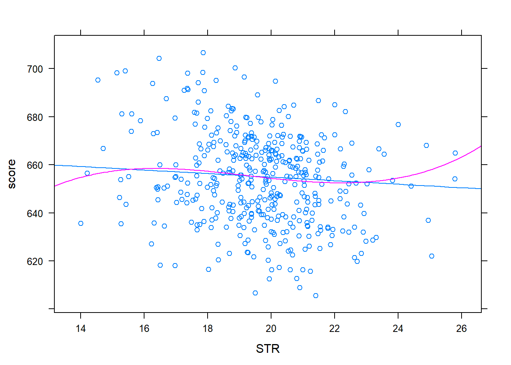
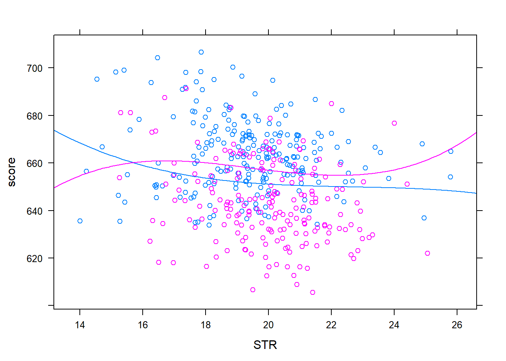

SW本8章の表8.3を再現する. まず以下のライブラリを導入する
library(knitr)
library(mosaic)
library(AER)
library(texreg)
library(tidyverse)
library(mosaic)またロバスト分散を何度も計算するため次の関数を作っておく.
## convenience function: HC1 covariances
hc1 <- function(x) vcovHC(x, type = "HC1")データを少し加工する.
data("CASchools", package = "AER")
df <- CASchools %>% mutate(score=(math + read)/2,
STR = students/teachers,
HiEL = I(english>=10)) %>%
select(score,lunch,STR,HiEL,english,income)
summary(df)## score lunch STR HiEL
## Min. :605.5 Min. : 0.00 Min. :14.00 Mode :logical
## 1st Qu.:640.0 1st Qu.: 23.28 1st Qu.:18.58 FALSE:228
## Median :654.5 Median : 41.75 Median :19.72 TRUE :192
## Mean :654.2 Mean : 44.71 Mean :19.64
## 3rd Qu.:666.7 3rd Qu.: 66.86 3rd Qu.:20.87
## Max. :706.8 Max. :100.00 Max. :25.80
## english income
## Min. : 0.000 Min. : 5.335
## 1st Qu.: 1.941 1st Qu.:10.639
## Median : 8.778 Median :13.728
## Mean :15.768 Mean :15.317
## 3rd Qu.:22.970 3rd Qu.:17.629
## Max. :85.540 Max. :55.328回帰分析を実行する.
## p. 152
fm1 <- lm(score ~ STR + english + lunch, data = df)
fm2 <- update(fm1, . ~ . + lunch + log(income))
fm3 <- update(fm1, . ~ STR + HiEL + I(HiEL*STR), data = df)
fm4 <- update(fm3, . ~ . + lunch + log(income))
fm5 <- update(fm4, . ~ . - I(HiEL*STR) + I(STR^2) + I(STR^3))
fm6 <- update(fm5, . ~ . + + I(HiEL*STR) + I(HiEL*STR^2) +I(HiEL*STR^3))
fm7 <- update(fm5, . ~ . - HiEL + english)ロバスト分散を考慮に入れて作表する.
ll = list(fm1,fm2,fm3,fm4,fm5,fm6, fm7)
selist <- ll %>% map(~coeftest(.,hc1)[,2])
pvlist <- ll %>% map(~coeftest(.,hc1)[,4])
hc1 <- function(x) vcovHC(x, type = "HC1")
htmlreg(ll, override.se=selist,override.pvalues=pvlist,
include.rsquared = FALSE,digits=3,
custom.model.names = c("(1)","(2)","(3)","(4)","(5)","(6)","(7)"),
reorder.coef = c(2,8, 9, 3, 6, 7, 10, 11, 4, 5, 1))| (1) | (2) | (3) | (4) | (5) | (6) | (7) | ||
|---|---|---|---|---|---|---|---|---|
| STR | -0.998*** | -0.734** | -0.968 | -0.531 | 64.339** | 83.702** | 65.285* | |
| (0.270) | (0.257) | (0.589) | (0.342) | (24.861) | (28.497) | (25.259) | ||
| I(STR^2) | -3.424** | -4.381** | -3.466** | |||||
| (1.250) | (1.441) | (1.271) | ||||||
| I(STR^3) | 0.059** | 0.075** | 0.060** | |||||
| (0.021) | (0.024) | (0.021) | ||||||
| english | -0.122*** | -0.176*** | -0.166*** | |||||
| (0.033) | (0.034) | (0.034) | ||||||
| HiELTRUE | 5.639 | 5.498 | -5.474*** | 816.076* | ||||
| (19.515) | (9.795) | (1.034) | (327.674) | |||||
| I(HiEL * STR) | -1.277 | -0.578 | -123.282* | |||||
| (0.967) | (0.496) | (50.213) | ||||||
| I(HiEL * STR^2) | 6.121* | |||||||
| (2.542) | ||||||||
| I(HiEL * STR^3) | -0.101* | |||||||
| (0.043) | ||||||||
| lunch | -0.547*** | -0.398*** | -0.411*** | -0.420*** | -0.418*** | -0.402*** | ||
| (0.024) | (0.033) | (0.029) | (0.029) | (0.029) | (0.033) | |||
| log(income) | 11.569*** | 12.124*** | 11.748*** | 11.800*** | 11.509*** | |||
| (1.819) | (1.798) | (1.771) | (1.778) | (1.806) | ||||
| (Intercept) | 700.150*** | 658.552*** | 682.246*** | 653.666*** | 252.050 | 122.353 | 244.809 | |
| (5.568) | (8.642) | (11.868) | (9.869) | (163.634) | (185.519) | (165.722) | ||
| Adj. R2 | 0.773 | 0.794 | 0.305 | 0.795 | 0.798 | 0.799 | 0.798 | |
| Num. obs. | 420 | 420 | 420 | 420 | 420 | 420 | 420 | |
| RMSE | 9.080 | 8.643 | 15.880 | 8.629 | 8.559 | 8.547 | 8.568 | |
| p < 0.001, p < 0.01, p < 0.05 | ||||||||
update(fm3, . ~ . - STR - I(HiEL * STR)) %>%
waldtest(fm3, vcov = hc1)## Wald test
##
## Model 1: score ~ HiEL
## Model 2: score ~ STR + HiEL + I(HiEL * STR)
## Res.Df Df F Pr(>F)
## 1 418
## 2 416 2 5.6381 0.003837 **
## ---
## Signif. codes: 0 '***' 0.001 '**' 0.01 '*' 0.05 '.' 0.1 ' ' 1update(fm4, . ~ . - STR - I(HiEL * STR)) %>%
waldtest(fm4, vcov = hc1)## Wald test
##
## Model 1: score ~ HiEL + lunch + log(income)
## Model 2: score ~ STR + HiEL + I(HiEL * STR) + lunch + log(income)
## Res.Df Df F Pr(>F)
## 1 416
## 2 414 2 5.9221 0.002912 **
## ---
## Signif. codes: 0 '***' 0.001 '**' 0.01 '*' 0.05 '.' 0.1 ' ' 1update(fm5, . ~ . -STR -I(STR^2) - I(STR^3)) %>%
waldtest(fm5, vcov = hc1)## Wald test
##
## Model 1: score ~ HiEL + lunch + log(income)
## Model 2: score ~ STR + HiEL + lunch + log(income) + I(STR^2) + I(STR^3)
## Res.Df Df F Pr(>F)
## 1 416
## 2 413 3 6.313 0.0003403 ***
## ---
## Signif. codes: 0 '***' 0.001 '**' 0.01 '*' 0.05 '.' 0.1 ' ' 1update(fm5, . ~ . -I(STR^2) - I(STR^3)) %>%
waldtest(fm5, vcov = hc1)## Wald test
##
## Model 1: score ~ STR + HiEL + lunch + log(income)
## Model 2: score ~ STR + HiEL + lunch + log(income) + I(STR^2) + I(STR^3)
## Res.Df Df F Pr(>F)
## 1 415
## 2 413 2 6.1663 0.002297 **
## ---
## Signif. codes: 0 '***' 0.001 '**' 0.01 '*' 0.05 '.' 0.1 ' ' 1update(fm5, . ~ . -STR -I(STR^2) - I(STR^3)) %>%
waldtest(fm6, vcov = hc1)## Wald test
##
## Model 1: score ~ HiEL + lunch + log(income)
## Model 2: score ~ STR + HiEL + lunch + log(income) + I(STR^2) + I(STR^3) +
## I(HiEL * STR) + I(HiEL * STR^2) + I(HiEL * STR^3)
## Res.Df Df F Pr(>F)
## 1 416
## 2 410 6 4.9617 6.416e-05 ***
## ---
## Signif. codes: 0 '***' 0.001 '**' 0.01 '*' 0.05 '.' 0.1 ' ' 1update(fm6, . ~ . -I(STR^2) - I(STR^3)) %>%
waldtest(fm6, vcov = hc1)## Wald test
##
## Model 1: score ~ STR + HiEL + lunch + log(income) + I(HiEL * STR) + I(HiEL *
## STR^2) + I(HiEL * STR^3)
## Model 2: score ~ STR + HiEL + lunch + log(income) + I(STR^2) + I(STR^3) +
## I(HiEL * STR) + I(HiEL * STR^2) + I(HiEL * STR^3)
## Res.Df Df F Pr(>F)
## 1 412
## 2 410 2 5.8063 0.003261 **
## ---
## Signif. codes: 0 '***' 0.001 '**' 0.01 '*' 0.05 '.' 0.1 ' ' 1waldtest(fm5, fm6, vcov = hc1)## Wald test
##
## Model 1: score ~ STR + HiEL + lunch + log(income) + I(STR^2) + I(STR^3)
## Model 2: score ~ STR + HiEL + lunch + log(income) + I(STR^2) + I(STR^3) +
## I(HiEL * STR) + I(HiEL * STR^2) + I(HiEL * STR^3)
## Res.Df Df F Pr(>F)
## 1 413
## 2 410 3 2.6903 0.04597 *
## ---
## Signif. codes: 0 '***' 0.001 '**' 0.01 '*' 0.05 '.' 0.1 ' ' 1update(fm2, . ~ . -STR) %>%
waldtest(fm7, vcov = hc1)## Wald test
##
## Model 1: score ~ english + lunch + log(income)
## Model 2: score ~ STR + lunch + log(income) + I(STR^2) + I(STR^3) + english
## Res.Df Df F Pr(>F)
## 1 416
## 2 413 3 5.9071 0.0005924 ***
## ---
## Signif. codes: 0 '***' 0.001 '**' 0.01 '*' 0.05 '.' 0.1 ' ' 1waldtest(fm2, fm7, vcov = hc1)## Wald test
##
## Model 1: score ~ STR + english + lunch + log(income)
## Model 2: score ~ STR + lunch + log(income) + I(STR^2) + I(STR^3) + english
## Res.Df Df F Pr(>F)
## 1 415
## 2 413 2 5.9579 0.002813 **
## ---
## Signif. codes: 0 '***' 0.001 '**' 0.01 '*' 0.05 '.' 0.1 ' ' 1xyplot(score ~ STR, data=df)
fn2 <- makeFun(fm2)
mean(~english, data =df)## [1] 15.76816mean(~lunch, data =df)## [1] 44.70524mean(~income, data =df)## [1] 15.31659plotFun(fn2(STR, english=15.76816,lunch=44.70524,income=15.31659)~STR,add=TRUE)
fn7 <- makeFun(fm7)
plotFun(fn7(STR, english=15.76816,lunch=44.70524,income=15.31659)~STR,add=TRUE,col=2)## converting numerical color value into a color using lattice settings
xyplot(score ~ STR, group=HiEL, data=df)
fn6 <- makeFun(fm6)
plotFun(fn6(STR, HiEL=TRUE,lunch=44.70524,income=15.31659)~STR,add=TRUE)
plotFun(fn6(STR, HiEL=FALSE,lunch=44.70524,income=15.31659)~STR,add=TRUE,col=2)## converting numerical color value into a color using lattice settings